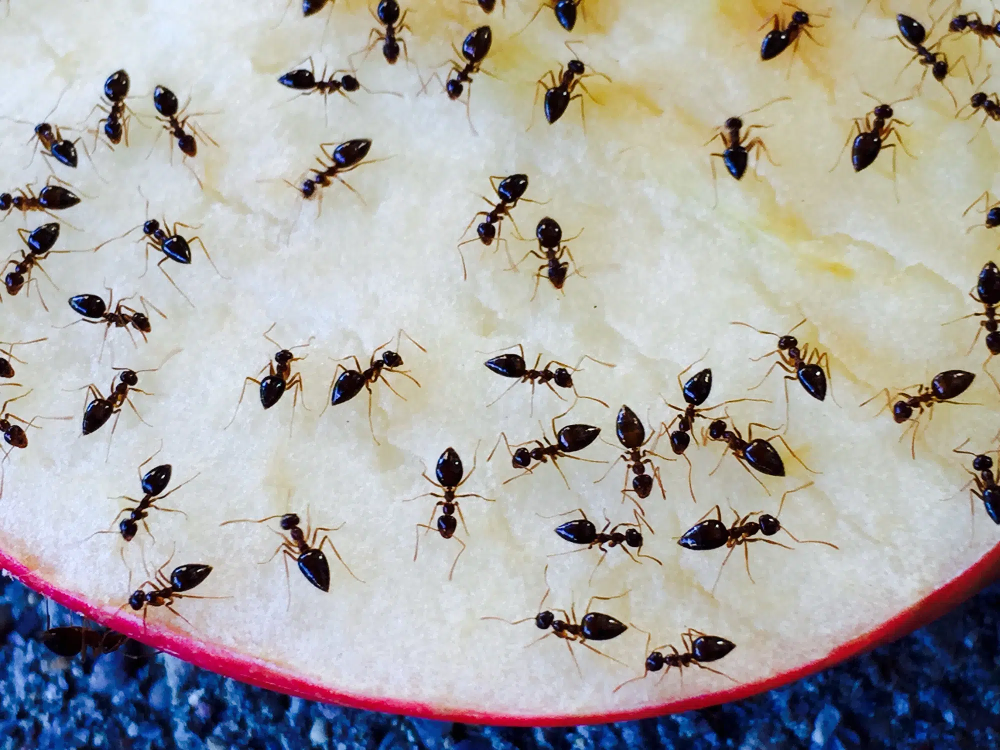
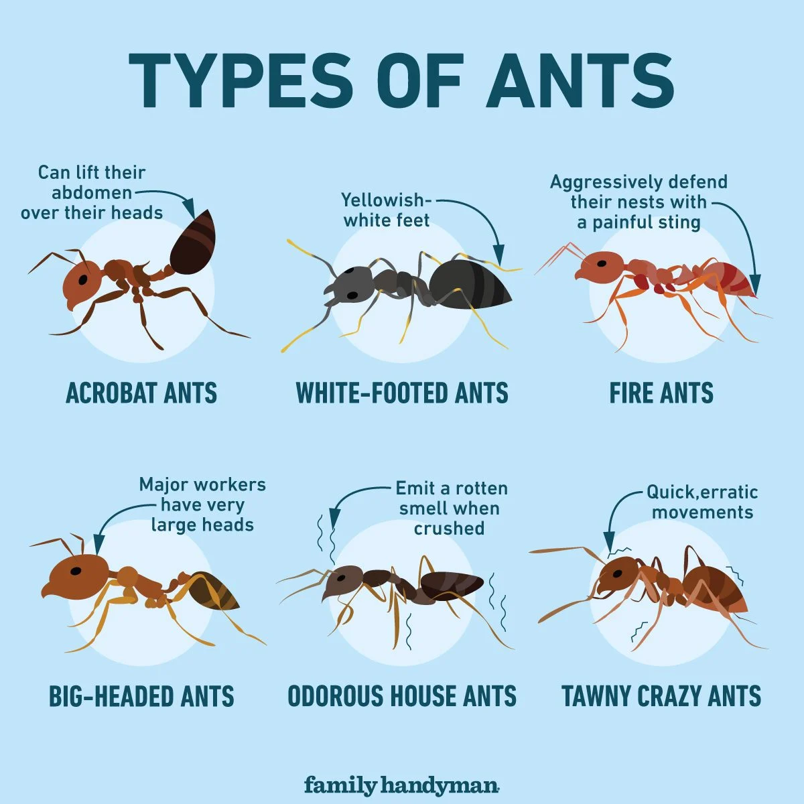
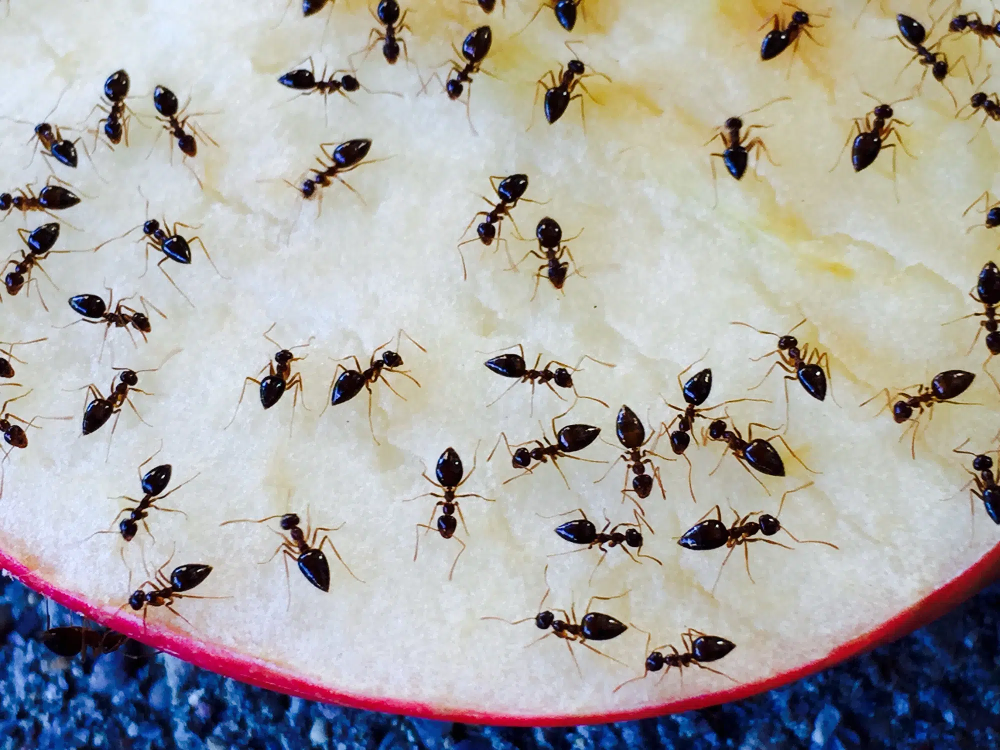
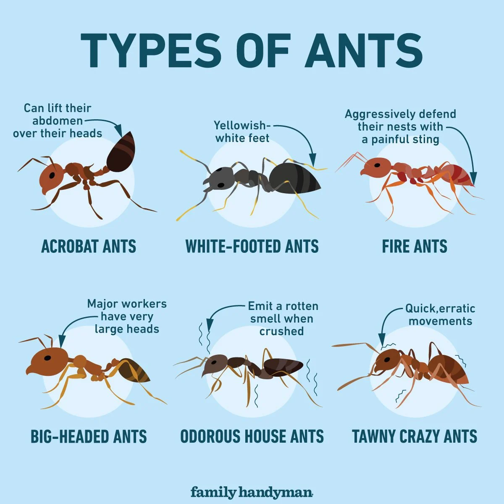

Ants
ants are social insects that can invade homes in search of food, water, and shelter. They find thier way into homes through various mean, such as cracks/gaps, utility lines, openings around doors and windows, basement/crawl space, plants/trees, and food sources.
How They Invade Homes
- Small cracks in walls, foundations, and around windows and doors provide easy entry points.
- Ants can use utility lines, such as electrical and plumbing lines, to gain access to homes.
- Poorly sealed doors and windows can allow ants to enter.
- Damp and dark areas like basements and crawl spaces are attractive to ants.
- Ants can use branches and plants that touch the exterior of a home as bridges to get inside.
- They are often attracted by accessible food sources, such as crumbs, spills, and pet food.
How to Prevent Infestations
- Close off any cracks, gaps, and crevices in walls, foundations, and around doors and windows.
- Keep kitchen and dining areas clean, store food in airtight containers, and clean up spills and crumbs immediately.
- Use sealed trash cans and dispose of garbage regularly.
- Keep trees, shrubs, and plants trimmed and away from the house to reduce access points.
- Repair any plumbing leaks and ensure proper drainage to reduce moisture that attracts ants.
- Place ant baits and traps in areas where ants are commonly seen to control their population.